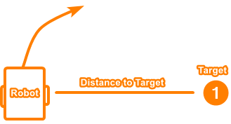

2018-19 Showcase - August 1, 2019
Hello everyone!
I’m Theo from 7842F, and I’m the programmer for our team.
I’ve been meaning to make this post ever since worlds, but I haven’t had the time to do so. I now finally have some time before my school starts (I still have 1 week of summer) to show the VEX community our robot and all the different designs we have implemented to make it.
Even though the Turning Point season is way over, the things I will show in this post still applies to this year and VEX in general.
Who Are We?
7842F is a 2-person team from Vancouver Island, Canada. We meet to build twice a week for ~4 hours, and we design and program at home. We are not allowed to take our robots home, so we try to be as organized and efficient as possible with the time we have to build. Our team captain is Jacob Walter, and he did pretty much all the designing, cadding, building, documentation, journals, and driving. I did all the programming, helped with building, made our website, and was a partner driver at worlds.
Video Explanation/Demo
I recorded a brief video a while ago demonstrating our robot. The following post will cover in more detail the designs that went into each system.
https://www.youtube.com/watch?v=iW4RlnHbDrY
Flywheel Velocity Control
Throughout the TP season, we stuck with a flywheel design. We improved and upgraded it through the year, and gained a lot of knowledge about using it. We went through 3 different flywheel designs. The first was a 1m back-loading simple flywheel, the second a 2m front-loading indexed flywheel, and the last a 2m front loading angling flywheel.
In all our designs, we needed to be able to control the flywheel speed as precisely and consistently as possible. It was also crucial that the flywheel was able to regain its speed as fast as possible after a ball was shot. Since we were using the Cortex system during the development of our flywheel control system, we were able to take advantage of RobotC’s amazing debugger system and graph our flywheel performance.
Traditional Control
First of all, we tried “traditional” velocity pid control. This is usually what is taught in control theory, and is implemented as output += pid(...);. This means that the motor power being sent to the flywheel is being tweaked incrementally each step by a PID controller.
The issue with this method is that a flywheel is very unresponsive, so the PID would ramp up the motor power much too high, and then the flywheel would overshoot, and then the PID would take a long time to get the flywheel to reach the goal. If we tried to lower the PID gains, the flywheel would be too sluggish and take much too long to react.
This is the velocity PID algorithm used in V5 Motors, OkapiLib, and most velocity PID controllers.
Custom Algorithm - Feedforward
I decided to scrap that algorithm and try to make my own. First, I wanted something that given a target RPM would know right away the general voltage that needed to be sent to the motor.
I did this by introducing a new term named feedforward. Feedforward is simply target * kF, in other words, the higher the target velocity, the proportionally higher the output power. When kF is tuned right, it can bring the flywheel to the approximate ballpark velocity, assuming linear flywheel velocity to input voltage.
For example, if the target is 2800rpm, and kF is tuned for our early-season flywheel, it would output 90 power. This is the term that does most of the grunt work involved with moving the flywheel.
Using feedforward, I could then implement my PID as output = pidf(...);
Accuracy
However, feedforward can’t do all the work. The velocity might not be linear to output power, or there may be some friction or other interference. This is where P (Proportional) comes in. P, supported by F, does the rest of the work by nudging the flywheel power in the right direction to completely reach the goal. For this to work, P must be very high, leading to another problem: oscillation.
The signal coming in from flywheel velocity calculations are quite noisy if you want them to be up-to-date. When the algorithm sees this noise, and kP is high, this translates to noise in the output signal. This means the motor starts oscillating, which translates to real flywheel oscillation. This translates into an even more noisy signal going into the PID, causing a vicious cycle of oscillation.
Signal EMA Filtering
To solve this issue, the input signal needs to be smoothed. For this, I use an EMA (Exponential Moving Average) filter.
https://en.wikipedia.org/wiki/Moving_average
EMA takes the flywheel reading over time and strikes a balance between taking into account the new reading and keeping the old one. If you overuse EMA, it will cause the signal to be unresponsive and outdated, causing more oscillation, so it is important to use just the right amount to smooth noise.
Now that EMA causes the input signal to be smooth, the output power will also be steady. This is exactly what we want when controlling a flywheel: smooth, steady power. Now that the input noise and oscillations are damped and filtered out, I can use a large kP gain to be as precise as possible without fearing oscillation.
Note: I could also try to use the I term for more accuracy, but I have not had a good experience with it, as it likes to introduce a lot of oscillations into the system. In my algorithm, I have not implemented I.
Derivative EMA Filtering
When the flywheel shoots a ball, I want the flywheel to recover as quickly as possible, so that the next shot will be consistent. That means I want the motors to spike to full power while the ball is being shot, not once the flywheel has slowed down enough for P to kick in. To do this, I use the D (Derivative) term. D is simply the rate of change of the error, applied to the motors to try to fight against that rate of change.
I don’t just want the D to kick in while the flywheel is slowing down, I also want it to linger a bit after the shot to provide an extra boost. To do this, I also apply an EMA filter on the D. Filtering D is common practice, as it makes D have time to affect the output instead of being there for only a few timeslices. Without filtering, it only acts against the change of motion exactly when it detects it, so in the case of a flywheel, when you shoot a ball, the only effect D will have is exactly when the flywheel is slowing down. With filtering, D lingers a bit after the initial high rate of change.
As you can see, using a filtered D allows the flywheel to resume target speed as fast as possible.
Slew Rate
Finally, to protect the motors, I apply a one-way slew rate to the output power. This protects the motors during ramp-up and dampens the system. The flywheel power can drop very fast, but it needs to gradually climb back up.
If you look at most of the above graphs, you can see that the initial acceleration of the motor power is gradual. In the following graph, look at how the motor power (green) is limited and ramps up slowly even though the PID would have it at full power instantly.
Slew rate can be implemented with a simple algorithm. Here is the pseudocode:
increment = output - outputLast;
if(abs(increment) > slewLimit) output = outputLast + slewLimit * sgn(increment);
outputLast = output;
Flywheel Tuning
To properly tune the flywheel constants, I needed a solution that did not involve redownloading the code every iteration. With RobotC, I could directly tune the constants using the debugger, but with PROS V5, there is no such tool. This is why I designed an LVGL tuning utility.
V1: https://youtu.be/SaY6B3MW3AI
V2:
I also made a graphing utility to visualize the flywheel performance:
V5 Flywheel Datalogging
As you may know, the programming solutions V5 do not have any of the remote debugging features of RobotC. While I did have the GUI graph, I wanted a solution that could record in the background and report to the computer.
Thus I wrote a utility that saved a log of all the flywheel information in a CSV on the SD card. Each time the code ran, it would save a log of the flywheel state. I could then read these files on my computer and import them into graphing software such as R, Excel, or mathplotlib.
I kept this logger running in competitions and even worlds, so if something happened to the flywheel we could go back and look at its log, which contained information like temperature. I recommend using the SD card to store information, as it can be a useful tool. You can also use a third-party library to do the CSV writing and file management for you.
Flywheel Code
I have decided to release the code for this flywheel algorithm!
They are split into 3 parts:
- EMA Filter
- Velocity PID with D EMA
- Implementation with signal EMA and Slew Rate
RobotC
The files are located in
/Libraries/7842FLib/Filter/emaFilter.c/Libraries/7842FLib/PID/PIDEMASystem.c/Shared/MainFlywheelTask.c:
https://github.com/theol0403/7842F-Alpha-Code-RobotC
PROS (V5)
https://gist.github.com/theol0403/0b484a5a00274edd5b85aa16009ba1ab
Angling Hood
For our third robot, the one we took to worlds, we made an angling flywheel hood. It took us months to perfect, but it worked well in the end.
Double Ratcheting System
Our worlds robot had a 2m flywheel. However, we also wanted a 4m base, an intake, an indexer, and an arm. To achieve this, we had to use a motor sharing system. Since the flywheel motors only spin in one direction, we took advantage of the other direction by using a double ratchet system. We could then power another subsystem when the motors spun backward. With this system, we were able to use 2 motors to power our flywheel, indexer, and angler.
We needed smaller and more compact ratchets than was provided by VEX, so Jacob designed a custom ratchet and submitted it to the CAD online challenge: https://challenges.robotevents.com/challenge/94/entry/6325
He then expanded that system by making a compact double ratchet.

The angler is ratcheted so it can only be moved forward. When the angler reaches the maximum position, a slip gear brings the angler back to the resting position.
Operation
Here is the flywheel system’s typical routine:
- Both motors spin CCW and work together to spin up the flywheel
- When a shooting angle is requested, the angler motor spins CW to engage and move the angler, cycling if needed. The indexer motor maintains the flywheel’s speed.
- When the angler is at the desired position, the angler motor resumes powering the flywheel.
- When it is time to shoot, the indexer motor spins CW, engaging the indexer and shooting the ball. The angler motor maintains the flywheel’s speed.
- The indexer motor resumes powering the flywheel.
- If a doubleshot is selected, the angle for the next flag is requested and steps 2-5 repeat
- Both motors continue powering the flywheel until the next angle adjustment or shot
Here are a few clips showing the robot doing double shots:
Angle Request System
The thing that makes our angler different compared to other angling hoods is that we can specify the exact angle we want the ball to shoot. To make the most of this ability, we needed to record the perfect shooting angle for each flag (top and middle) given various shooting positions.
We decided to have 4 shooting positions:
- Position 1 is when the angler is all the way back and shoots the top flag
- Position 2 is with the back of the robot against the platform
- Position 3 is with the front of the robot against the platform
- Position 4 is with the back of the robot against the back of the court
If we were on the near starting tile, we could also turn and shoot across the court using angler position 3 and 4.
Having these positions tuned allowed us to do some pretty cool shots:

Driver Interface/Controller Mapping
Having all these different shooting configurations required having a dedicated driver setting them. Thus I became the partner driver and controlled the angler.
Our workflow was this: the main driver (Jacob) would grab balls, and then head for any of our 4 shooting positions. He would tell me ahead of time which position he was planning to shoot at.
I would then press the buttons corresponding to that position, so the angler would be at the proper position ahead of time so it could be ready to shoot
After the driver lined up for the shot, I would press the shoot button, which would then execute whatever setting I had specified (top/middle/doubleshot at what position).
Here is our controller mapping:
I also have a display on the controller that gives me some useful information:
It tells me which distance and which flag is selected, whether the flywheel is at target velocity, the time left in the match, the robot’s battery, and the controller ID. This display was useful for driving at competitions. A copy of this screen is also on the master controller.
Angle Tuning
To tune the hood angles I experimented with various options. I tried using the controller buttons to tune the angles and writing logs to the SD or the terminal, and making a GUI. They all worked to some extent, but the controller was awkward so I stuck with the GUI option, as it was the most flexible and fast to use.
The Dist buttons allowed me to control which distance setting to change the angles for, and the Top and Mid buttons allowed me to adjust the angles for that distance. The visualization in the middle of the GUI shows the hood angles - white is the hood’s current angle, and black and blue are the top and mid angles, respectively.
Code Implementation
The angler system was one of the most complicated programs I’ve ever made. It needed to be able to execute a series of dependent actions, but be asynchronous and interruptible. It also needed to be able to manage two other systems (flywheel and indexer) that were independently controlled, delegating motor ownership between them. It also needed to have a clean outside interface for drivercontrol and autonomous.
The solution involved making a statemachine that had a stack containing a list of pending actions. Each action would execute until its conditions were met, and then it would pop itself out of the stack. If an action needed another action to execute, then it would push that action onto the stack.
Here are all the possible actions the angler could take:
enum shootStates {
off, //control to flywheel and intake
standby, //back position, control to flywheel
angling, //indefinite angling
cycle, //head to back position
extend, //move to extended position
waitForSlip, //wait until hood slips
waitForRetract, //wait until hood back to 0 pos
angleTop, //drop hood to top angle
angleMiddle, //drop hood to middle angle
angleTopPlatform, //angle top from platform
angleMiddlePlatform, //angle middle from platform
angleOut, //drop hood to out (ground flag) angle
angleTarget, //drop hood to target angle
waitForDoubleShot, //if distance is large enough, wait before second shot
waitForBall, //wait for ball to be in indexer
waitForFlywheel, //wait until flywheel is ready
enableShoot, //shoot indexer
waitForShoot, //delays until shot detected
reportDone, //lets autonomous know
loopJob, //reloads current job
loopMacro //reloads current macro
};
I then defined a collection of “macros”, groups of actions put together in a sequence:
enum class shootMacros {
off,
shootTop,
shootMiddle,
shootBoth,
shootTopPlatform,
shootMiddlePlatform,
shootBothPlatform,
shootOut,
shootTarget,
shoot,
angle,
cycle
};
Once I had these self-executing macros set up, I could tell the angler statemachine to “shootBoth”, and it would execute these actions:
- angleTop
- enableShoot
- angleMiddle
- waitForDoubleShot
- enableShoot
- reportDone
- cycle
- standBy
It was a whole other challenge making the interface between the controller buttons and the statemachine macros, but I won’t get into that in this post.
Our angler system allowed us to shoot from practically anywhere in the court, and at worlds we took advantage of this - the large majority of our shots were taken from behind the platform. It took us a very long time and a lot of work to develop, but it worked very well in the end.
Odometry/Autonomous
This past year we have developed odometry for our robot. Odometry is the act of tracking the robot’s position in the court and then using that information for autonomous routines. Instead of the standard “drive distance, turn angle”, I can use odometry to say “drive to coordinate, aim at coordinate”. The algorithm for the tracking was generously provided by 5225A, but I developed all the infrastructure and movement algorithms.
We used 2 free-spinning tracking wheels on our robot. Tracking wheels are designed to give the most precision to odometry as possible, as powered wheels can slip and are not as precise. We opted not to use a third tracking wheel because we did not have physical space to put it and we didn’t have any extra sensor ports. If possible I would recommend having a third wheel, as we had some consistency issues/drift because the tracking wheels would sometimes slide sideways.
Odometry Debugging
Odometry is one of the most difficult things to diagnose if something goes wrong. You don’t know if the wheels failed, if the sensors failed, or if the code is wrong, and in what way. To help alleviate some of that pain, I wrote a GUI utility that helped us pinpoint problems.
With this, you can try moving the robot in a straight line and see if one sensor is lagging behind the other, or to see if the tracking algorithm is broken. As a tool to help others (and as an incentive to help test OkapLib v4’s beta odometry system), I have published the code for this.
https://github.com/theol0403/odomDebug
Movement
Once you know the position of the robot and where you want to move, the challenge is to actually move there. Here is a basic algorithm to drive to a point:
- Calculate angle to target
- Turn to face the target
- Calculate distance to target
- Move distance to reach target
While this algorithm works decently well, it is quite slow and is not able to dynamically adjust while on-course. I instead wanted to make an algorithm that would curve toward the target, and calculate course adjustments on the fly.
PID to heading and distance
The first algorithm that was tried was PID. The distance and angle to the target would be sent to 2 PID controllers, and then the outputs would be combined. There were two problems with this method.
The first was that the algorithm had to be terminated when the robot reached the general vicinity of the target, or else the robot would start having a spasm. Think about it - PID needs to have a negative input signal to be able to back up and settle. However, when calculating distance to a point (using pythagoras), you can’t know when you overshoot the target. Therefore, the robot can only move forward, so when it reaches and overshoots the target, the angle to the target flips 180 degrees and the distance PID goes full throttle. This causes the robot to go crazy.
The second problem with this method is that it is not the most efficient. If the robot was perpendicular to the target, the distance PID would output full power, even though moving forward is the wrong thing to do.

Instead, I wanted an algorithm that prioritized turning over moving, and that only moves when doing so would make the robot get nearer to the target.
Adaptive PID Seeking
I posed this question: “If the robot is locked to its current heading, so it can only move forward/backward, how can it move in a straight line to get closest to the point as possible?”.
If the robot was perpendicular to the target, the answer would be 0. But as the robot rotates to face the target, the answer becomes more and more. Here are some images illustrating the question (the answer is the length of the red line):
With the help of others, I was able to implement the math for this. When doing distance PID on the output of these calculations, the robot was able to move much more efficiently. I also had to implement some logic to be able to drive backward. The reason this algorithm works great for settling is that if I turn off the angle PID when the robot is a certain distance away from the target, the adaptive distance PID brings the robot to a settled stop, giving a negative signal to back up.
To test this algorithm, I (with some help) made a javascript simulation. You can see how the robot prefers turning over driving, and how it settles smoothly.
Autonomous Code
Once I had the tracking and movement completed, it was time to make an API for me to use for writing autonomous programs. I wanted something flexible, abstract, and feature-packed. Here is what I ended up with:
Settling
Every single autonomous motion has a settling period. However, I wanted the settling to be customizable for every single command. I wanted to be able to settle a few different ways:
- All PID controllers come to a rest
- All PID controllers get to some margin of error
- The robot gets to a certain requirement, such as a certain distance from a point or a certain angle
To do this, I created a parameter in each movement function that accepts a function pointer to handle the settling. Every loop, the movement function will ask the settling function “am I settled yet?” and then the function will return true when it’s conditions are met.
Then, I created a few default settling functions and added the functionality to generate new settling functions on the fly. For example, here is a command with a full settle that comes to a stop: chassis.driveToPoint({1_ft, 1_ft}, 1, driveSettle);. If I wanted to make the robot exit the movement when it was 4 inches away from the target, I could say chassis.driveToPoint({1_ft, 1_ft}, 1, makeSettle(4_in));.
Turning
All turning is essentially the same motion. The only difference with all possible turns is the goal calculation and movement method (point, pivot, or arc). To reduce redundancy, I wanted to write only one turning algorithm, and have all the implementations plug-in. Thus I used the same function pointer idea as the settling system and added parameters in the turning function to fulfill the angle calculation and movement method. Here are a few examples of a turn command:
chassis.turn(angleCalc({1_ft, 1_ft}), pointTurn, turnSettle);
chassis.turn(angleCalc(90_deg), leftPivot, makeSettle(5_deg));
For simplicity, I also made a few helper functions - turnToAngle(angle), turnAngle(angle), and turnToPoint(point), which all just call turn(angleCalc) in the backend.
AsyncAction
All the movement functions are blocking, but I still wanted to be able to trigger actions such as moving an arm in the middle of a movement. To do this I developed a system called AsyncAction, which requires a trigger (ex. min distance to point) and executes an action (ex. moves arm). In autonomous, used it to turn on the ball intake right when the robot reached the ball.
Emergency Abort
There is nothing I dislike more than having the robot slightly off in autonomous, causing it to drive into a wall, and then being stuck there for the rest of the autonomous trying to push the wall over. Thus I made a system that detects when the robot is trying to move but is not moving. When it detects that the robot is stuck, it exits the current movement and goes on to the next one. With odometry, hopefully the robot will be able to continue the autonomous, because it still know its position even though it got stuck and had to abort a movement.
Result
All these abilities made programming autonomous much easier than before. I could use an image of the court to plan my autonomous and simply enter the coordinates of where I want the robot to be. Here are a few videos of our autonomous routines - I know they are not inherently impressive, but we did not have enough time to make many of them.
Notice how the base sometimes curves to get to the target point.
https://www.youtube.com/watch?v=_GutEusmo0g
https://www.youtube.com/watch?v=iPL_i5kivEM
Vision Sensor
When the VEX Vision sensor came out at the beginning of last year, I was super interested in making an interface for it. I then noticed that the sensor was very unreliable, and the code for interfacing with the objects was quite limited. However, I wanted to use it for aligning with flags, so I set off to try and make the vision sensor better - using programming.
Filters and Sorting
First, I wanted to make filters. I wanted to filter tiny “noise” objects, abnormally sized objects, objects with abnormal proportions, etc. I also wanted to sort objects by arbitrary attributes and have an easy API to do so. This project has been at work all season, I have gone through many versions and it is not completed yet. Here is what my latest version can do:
reader.getAll(); // gets all objects from sensor
// remove objects with area smaller than 200 and sort by size
// commands can be chained
reader.removeWith(objAttr::area, 0, 200).sortBy(objAttr::area);
// only keep objects with signature 1
reader.removeWithout(objAttr::sig, 1);
The library can also display objects to the screen for debugging:
It is likely I will release this library at some point this year when I am happy with it.
EMA Filtering
However, I noticed a problem with the vision sensor. The objects would often flicker and wobble, which I was worried would translate into oscillation and problems with filtering. So I decided that I needed to EMA filter the objects. This is a more difficult task than one would think, as I can’t simply filter by object index because the objects are ordered arbitrarily (or by size, not position). I won’t get into how I managed to do it in this post, but basically, I looked at the objects over time, kept track of where they were, ordered them, and then correlated the objects in a new snapshot with the previous snapshots. I could then EMA filter them. To develop this system, I used the LVGL simulator to test on my computer. If there is interest for me to make a guide on how to set up the simulator with C++, let me know.
I have had an interesting relationship with the vision sensor throughout the season. Despite all the work I did with it, I never got it to the point where I was comfortable using it in competition. It was just so frustrating to use and unreliable. Hopefully, VEX will fix the firmware for the vision sensor and it will become more practical for use. When I have the time I will keep working on my library so that it can be eventually released.
7842 Website
Earlier in the season, I designed a website for the online challenges. In hindsight I want to change a lot of things with it and improve the tutorials, but it still stands as a useful resource. I wrote a few tutorials about PROS and programming. Go check it out here!
Engineering Journals
Throughout the season Jacob did an amazing job of documenting our progress. He made two engineering journals, one for project management and ideas, and the other for linear build documentation. If you are interested in our design process, ideas, and more of our robot, check them out! They have earned us awards at every competition we have gone to, except for worlds, because unfortunately there our judging was rushed. However, later we were approached by the pair of judges that we were able to give our full presentation to and were complimented on our presentation.
I hope these journals are a great resource and that they provide a good learning opportunity! My favourite pages are the last 40 of the project journal.
There are higher and lower-resolution versions, and the original images, available here. Enjoy!
Conclusion
This season has been really fun. Jacob and I have learned a lot and made it to Worlds together for the second time in a row. I have made huge advancements in my programming ability and have found a passion for it.
Unfortunately for me, Jacob has graduated this year and will be going to university. This leaves me as the team captain of a 1-person team with little building skills. Our club leadership has stepped down, leaving the club in a state of uncertainty. I have no idea what will happen in the following season, but I hope I can find a new robotics partner and continue the success of 7842F.
As for programming, I plan to create a library and implement some ideas I have been wanting to make for a while. Stay tuned!
Contact
If anyone has any questions or comments about this post, I am more than happy to answer them. If someone has suggestions to improve this post, let me know while I am still able to edit!
Also, feel free to contact me about programming questions in general on Discord at theol0403#6480. Just know that I will probably tell you to read learncpp.com.
For updates, follow us on our instagram account 7842F_vrc!
I hope this has provided a valuable resource for future seasons and has taught someone something. Have a great season!